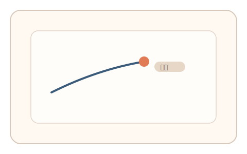
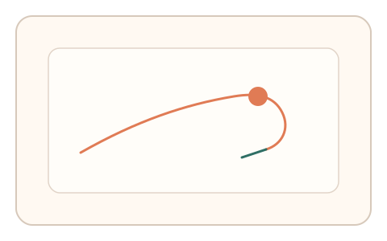
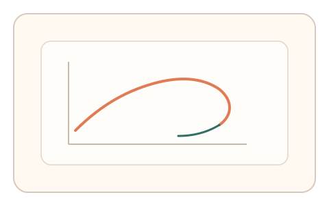

#11
生物肌肉与鼠标运动
已扩展
变延迟修正
在指针响应中引入随机微延迟，利用过冲与回拉的反馈控制特征识别人类操控。
概念原文
对光标响应引入随机微小延迟，观察用户过冲与回拉的修正波形。人类会因延迟出现短期预测错误并快速纠正，曲线呈非线性回弹。
用“被动适应延迟”的真实反馈模式区分自动化轨迹。
研究背景
反馈控制系统在存在延迟时会出现过冲与纠偏，人的手眼控制也遵循类似规律。通过随机引入微小延迟，可观察人类的预测误差与纠正波形；脚本往往缺少真实反馈滞后。
核心机制
- 在指针响应中引入随机微延迟。
- 记录延迟引发的过冲与回拉波形。
- 评估纠偏时延、幅度与非线性回弹。
- 多段延迟变化提升稳定性。
用户流程
- 步骤 1：用户执行指针控制任务。
- 步骤 2：系统随机注入微延迟并采集轨迹。
- 步骤 3：系统分析过冲‑回拉波形并判定。
判定信号
延迟引发的过冲幅度
真实反馈控制会产生可测过冲。
回拉速度与纠偏时延
人类控制存在反应时与纠正滞后。
判定逻辑
检测延迟切换点的过冲‑回拉曲线形态与反应时分布；过度平滑或零延迟响应判异常。
对抗面
- 脚本预测延迟并使用控制器模拟反馈
- 回放已有延迟曲线
防御与缓解
- 随机化延迟模式并加入微扰
- 多段延迟组合与多信号耦合检测
- 联合抖动谱与速度曲线提升鲁棒性
可达性与风险
提供低延迟或无延迟替代任务，避免对反应速度受限用户造成负担。
- 网络或设备延迟可能干扰判定
- 过高延迟会明显影响体验
可视化状态

状态 1：延迟注入
指针响应引入微小延迟。

状态 2：过冲回拉
用户出现过冲与回拉纠偏。

状态 3：延迟波形判定
基于过冲‑回拉曲线进行判定。
参考资料
Control theory
说明反馈控制与延迟下的过冲现象。
Latency (engineering)
说明系统延迟对响应的影响。